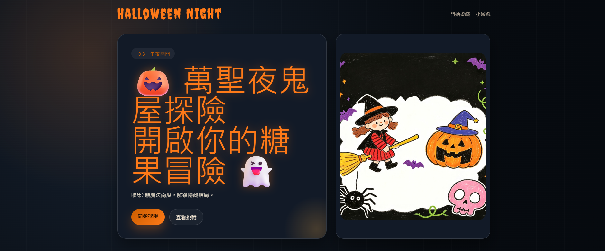
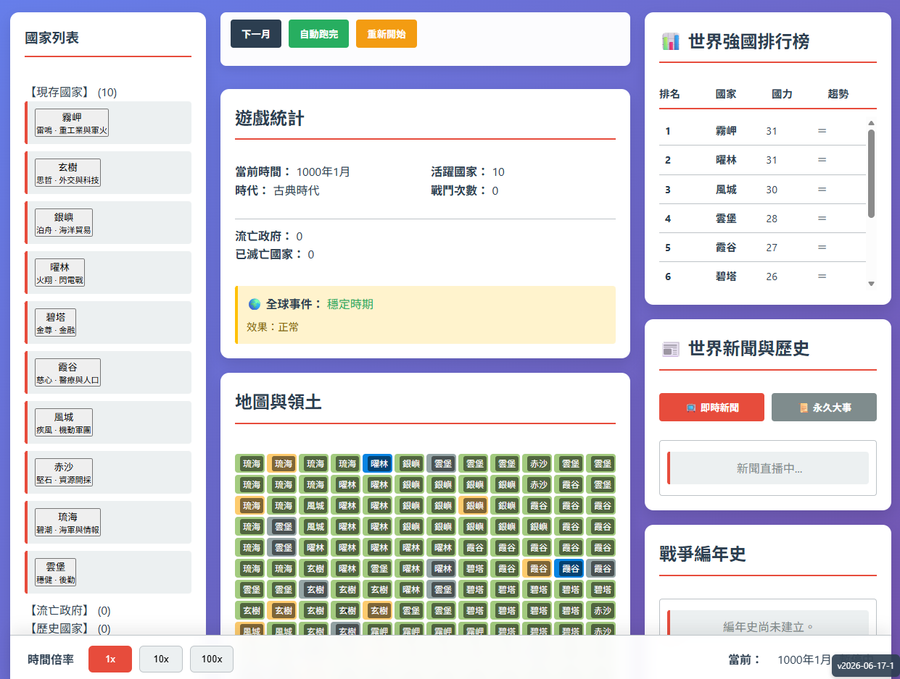
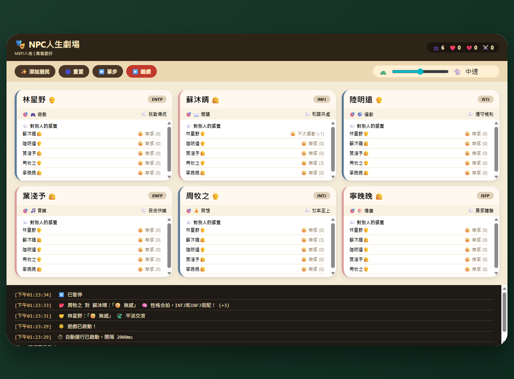

Selected cases
我喜歡做能點、能切、能逛，也有主題感的網站作品。
這頁收的是我現在最有代表性的作品。它們大多跟遊戲、角色、收藏或互動體驗有關，也比較接近我真正喜歡的做法。

Featured image
偏遊戲主題、圖片感強、互動感高。Case studies
精選案例
這些作品不是走商業官網路線，而是比較偏主題站、資料整理頁、模擬工具和收藏型設計。



What I focus on
這些作品共同的特徵
比起標準化版型，我更喜歡讓每個網站有自己的玩法和主題。
我最常做的三種核心設計
1. 分類與切換
我很常把內容分層，讓使用者一步一步點進去，而不是直接被資訊淹沒。
2. 角色與主題感
作品通常會有明確的題材，像是特定遊戲、角色群或收藏世界觀。
3. 可操作的互動
不只是閱讀資訊，我會盡量讓頁面可以切換、預覽、模擬或探索。
Current preference
我現在最喜歡的題材
如果要我做得最自然、也最像我自己，會是這些方向：遊戲相關、粉絲向、收藏型、角色資料整理，或小型互動工具頁。